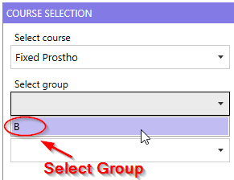

Reference: Course Selection
This section provides information on selecting a course, group, and task in the PrepScanner App.
Overview
The Course Selection section of the PrepScanner App allows users to select a course, assign groups, and choose specific tasks within the selected course.
Course Selection Process
-
Select course: Choose the relevant course from the available list.
Figure 2. Select course dropdown
-
Select group: Assign or choose the appropriate group within the selected course.
Figure 3. Select group dropdown list

-
Select task: Pick a task related to the course for further processing.
Figure 4. Select task dropdown list
Additional Course Operations
- Edit Course Details
- Modify specific course details, including Course, Group, Task, Task Due
Date, Course Access Date, and Student Report Email Date.
Figure 5. Edit Course Details
- Add New Course
- Create a new course entry.
Figure 6. Create Course Details
- Delete Course
- Remove an existing course from the system.
Figure 7. Course Edit Page with Delete Course Button
- Clear Course Selections and Tooth Selections
- Reset the selected course, group, task, and tooth choices.